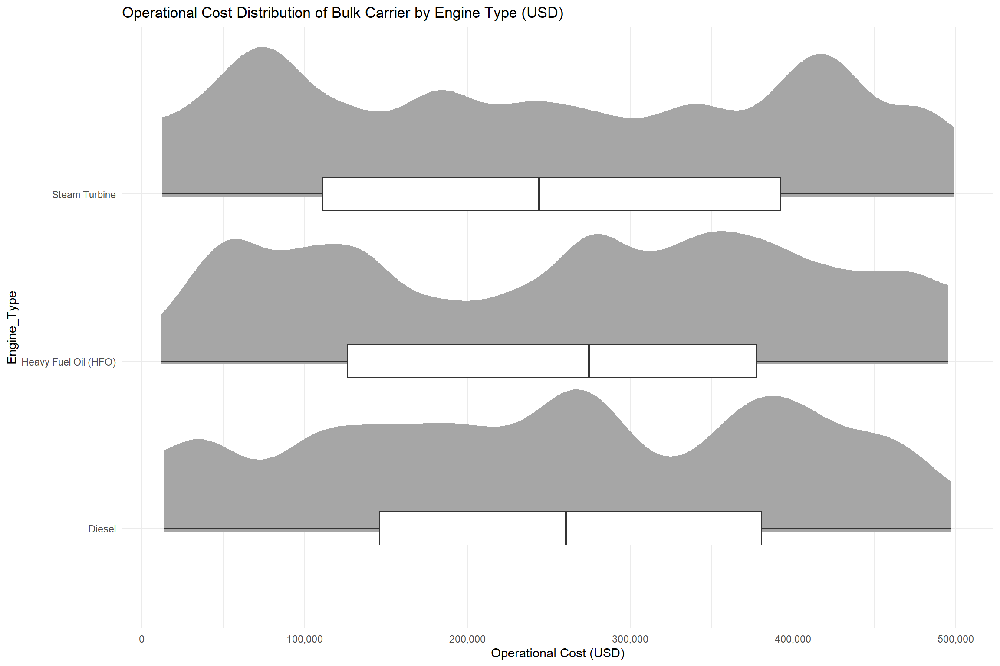
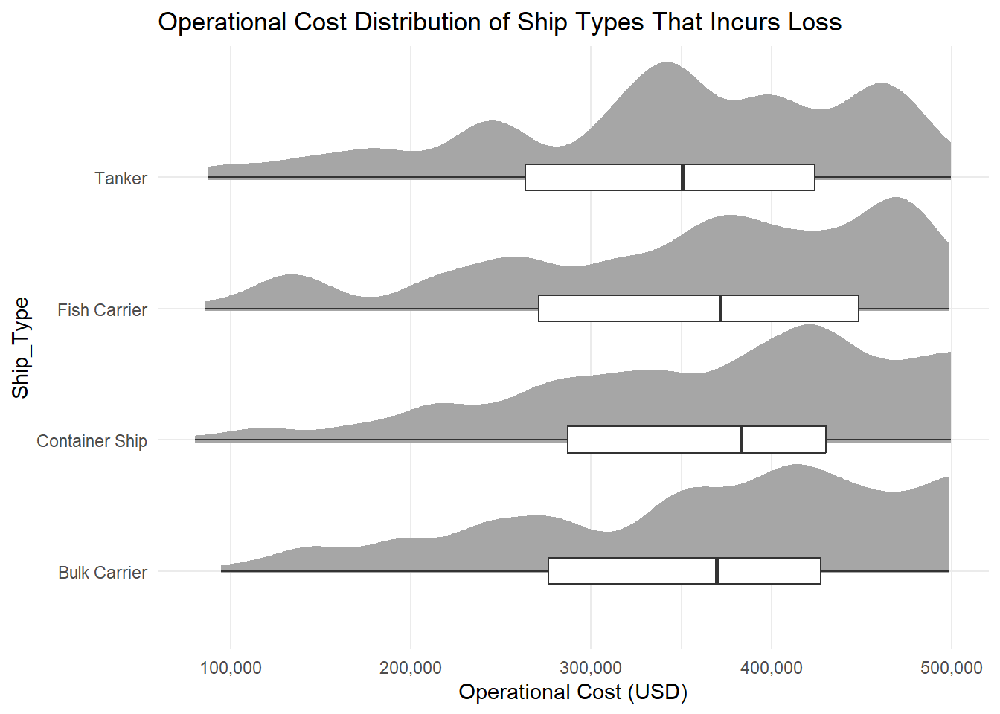

pacman::p_load(tidyverse, ggrepel, patchwork, ggthemes, hrbrthemes, ggiraph,
plotly, DT, readxl, gifski, gapminder, gganimate, ggdist, ggridges,
colorspace, ggstatsplot, crosstalk, FunnelPlotR, knitr, scales,
corrplot)Take-home Exercise 1
Ship Performance Analysis
1 Overview
1.1 The Background
The maritime industry plays a crucial role in supporting the global trade ecosystem, which serves as the primary mode for goods transportation. As it supports the international trading market, it is very important to pay more attention to the operational efficiency of the maritime industry. The purpose of this paper is to present the findings from shipping voyage data.
1.2 The Data
The following are the details of the data source for this analysis:
- Data Source: Ship Performance Clustering Dataset
- Dataset Size: 18 columns x 2,736 rows
- Data format: csv file
1.3 The Task
As the graphical editor of the media company, an article about ship performance in the Gulf of Guinea will be written and published. Hence, this paper will include the following contents:
- Exploratory Data Analysis of ship performance based on different underlying factors
- Visualization of key operational metrics of the ship for future performance optimizations in the maritime industry
2 Getting Started
2.1 Load and Install Packages
For this analysis, tidyverse and ggplot2 family packages will be used.
2.2 Import Data
Import ship performance dataset to get started with the analysis.
ship <- read_csv("data/Ship.csv")Rows: 2736 Columns: 18
── Column specification ────────────────────────────────────────────────────────
Delimiter: ","
chr (5): Ship_Type, Route_Type, Engine_Type, Maintenance_Status, Weather_C...
dbl (12): Speed_Over_Ground_knots, Engine_Power_kW, Distance_Traveled_nm, D...
date (1): Date
ℹ Use `spec()` to retrieve the full column specification for this data.
ℹ Specify the column types or set `show_col_types = FALSE` to quiet this message.3 Data Preparation
3.1 Select Variables
Before we begin with the analysis, let us do some variable analysis and check the columns that we will be using for this analysis. Each row of the dataset represents the performance metrics and attributes for a specific voyage/ship over a given timeframe.
colnames(ship) [1] "Date" "Ship_Type"
[3] "Route_Type" "Engine_Type"
[5] "Maintenance_Status" "Speed_Over_Ground_knots"
[7] "Engine_Power_kW" "Distance_Traveled_nm"
[9] "Draft_meters" "Weather_Condition"
[11] "Cargo_Weight_tons" "Operational_Cost_USD"
[13] "Revenue_per_Voyage_USD" "Turnaround_Time_hours"
[15] "Efficiency_nm_per_kWh" "Seasonal_Impact_Score"
[17] "Weekly_Voyage_Count" "Average_Load_Percentage"For easier read, let us list down all the columns in the table below to analyse the data types and the description.
Ship Dataframe
| Column Name | Type | Description |
|---|---|---|
| Date | date | timestamp of data entry |
| Ship_Type | categorical | types of vessel |
| Route_Type | categorical | types of route |
| Engine_Type | categorical | types of ship engine |
| Maintenance_Status | categorical | current maintenance status |
| Speed_Over_Ground_knots | numerical | average speed (knots) |
| Engine_Power_kW | numerical | engine power output (kW) |
| Distance_Traveled_nm | numerical | total distance travelled (nm) |
| Draft_meters | numerical | draft of the vessel (m) |
| Weather_Condition | categorical | weather condition during operations |
| Cargo_Weight_tons | numerical | weight of goods on the ship (tons) |
| Operational_Cost_USD | numerical | total operational cost per voyage (USD) |
| Revenue_per_Voyage_USD | numerical | total revenue generated per voyage (USD) |
| Turnaround_Time_hours | numerical | time taken per voyage (hours) |
| Efficiency_nm_per_kWh | numerical | energy efficiency (nm/kWh) |
| Seasonal_Impact_Score | numerical | not listed in Kaggle |
| Weekly_Voyage_Count | integer | total no. of voyage per week |
| Average_Load_Percentage | percentage (%) | not listed in Kaggle |
3.2 Remove Columns
From the table, we will keep all the categorical and numerical columns to gain further insights on this dataset. There are 3 columns that we should remove from this dataset, which are Date, Seasonal_Impact_Score and Average_Load_Percentage.
- Date: This column is removed because it only consists of the timestamp of the data entry, which is not necessarily value-add to this analysis.
- Seasonal_Impact_Score: This column is removed because there is no description of how the value in this column is calculated. As there is no details on the column calculation, there will be no insights gained from analysing this column.
- Average_Load_Percentage: This column is removed because there is no description and source of the column calculation, hence, there is no need to use this column for the analysis.
The 3 columns will be removed using the code chunk below:
ship <- ship %>% select(-c("Date", "Seasonal_Impact_Score", "Average_Load_Percentage"))3.3 Handling Missing Value
3.3.1 Categorical Column
table(ship$Ship_Type)
Bulk Carrier Container Ship Fish Carrier None Tanker
669 635 653 136 643 table(ship$Route_Type)
Coastal Long-haul None Short-haul Transoceanic
650 686 136 626 638 table(ship$Engine_Type)
Diesel Heavy Fuel Oil (HFO) None
892 853 136
Steam Turbine
855 table(ship$Maintenance_Status)
Critical Fair Good None
860 867 873 136 table(ship$Weather_Condition)
Calm Moderate None Rough
893 891 136 816 ship <- ship[ship$Ship_Type != "None", ]
ship <- ship[ship$Route_Type != "None", ]
ship <- ship[ship$Engine_Type != "None", ]
ship <- ship[ship$Maintenance_Status != "None", ]
ship <- ship[ship$Weather_Condition != "None", ]dim(ship)[1] 2127 153.3.2 Numerical Column
In this section, we will further clean numerical data type column to ensure the entire dataset is clean. The code chunks below will check the sum of null values of each numerical column.
sum(is.na(ship$Speed_Over_Ground_knots))[1] 0sum(is.na(ship$Engine_Power_kW))[1] 0sum(is.na(ship$Distance_Traveled_nm))[1] 0sum(is.na(ship$Draft_meters))[1] 0sum(is.na(ship$Cargo_Weight_tons))[1] 0sum(is.na(ship$Operational_Cost_USD))[1] 0sum(is.na(ship$Revenue_per_Voyage_USD))[1] 0sum(is.na(ship$Turnaround_Time_hours))[1] 0sum(is.na(ship$Efficiency_nm_per_kWh))[1] 0sum(is.na(ship$Weekly_Voyage_Count))[1] 0glimpse(ship)Rows: 2,127
Columns: 15
$ Ship_Type <chr> "Fish Carrier", "Container Ship", "Bulk Carrie…
$ Route_Type <chr> "Short-haul", "Long-haul", "Transoceanic", "Tr…
$ Engine_Type <chr> "Steam Turbine", "Diesel", "Steam Turbine", "D…
$ Maintenance_Status <chr> "Good", "Fair", "Fair", "Fair", "Fair", "Criti…
$ Speed_Over_Ground_knots <dbl> 10.38758, 20.74975, 21.05510, 13.74278, 18.616…
$ Engine_Power_kW <dbl> 1796.0574, 1648.5567, 915.2618, 1089.7218, 217…
$ Distance_Traveled_nm <dbl> 1060.4864, 658.8741, 1126.8225, 1445.2812, 723…
$ Draft_meters <dbl> 14.653083, 7.199261, 11.789063, 9.727833, 14.9…
$ Weather_Condition <chr> "Rough", "Moderate", "Moderate", "Moderate", "…
$ Cargo_Weight_tons <dbl> 162.3947, 178.0409, 1737.3853, 260.5951, 1912.…
$ Operational_Cost_USD <dbl> 483388.00, 448543.40, 261349.61, 287718.38, 18…
$ Revenue_per_Voyage_USD <dbl> 883765.79, 394018.75, 87551.38, 676121.46, 776…
$ Turnaround_Time_hours <dbl> 63.24820, 49.41815, 22.40911, 64.15823, 47.476…
$ Efficiency_nm_per_kWh <dbl> 0.2903614, 0.4995945, 0.7029057, 1.3313431, 1.…
$ Weekly_Voyage_Count <dbl> 6, 9, 1, 8, 7, 3, 6, 2, 9, 4, 3, 7, 7, 2, 4, 3…average operational cost per ship type, average revenue per ship type, stats of voyage per week
3.4 Check for Outliers in Numerical Column
There are total of 10 numerical columns that we can use for our statistical analysis. In this section, we will do an individual column check to see whether there is outliers affecting the column of the dataset.
boxplot.stats(ship$Speed_Over_Ground_knots)$outnumeric(0)boxplot.stats(ship$Engine_Power_kW)$outnumeric(0)boxplot.stats(ship$Distance_Traveled_nm)$outnumeric(0)boxplot.stats(ship$Draft_meters)$outnumeric(0)boxplot.stats(ship$Operational_Cost_USD)$outnumeric(0)boxplot.stats(ship$Cargo_Weight_tons)$outnumeric(0)boxplot.stats(ship$Revenue_per_Voyage_USD)$outnumeric(0)boxplot.stats(ship$Turnaround_Time_hours)$outnumeric(0)boxplot.stats(ship$Efficiency_nm_per_kWh)$outnumeric(0)boxplot.stats(ship$Weekly_Voyage_Count)$outnumeric(0)The result from the codes above shows that there are no potential outliers affecting the dataset.
3.5 Derive New Columns
To gain more insights on this analysis, let us derive a new column to find out the profit gained on each voyage of the ships. The code chunk below will use mutate() to derive the new column.
ship <- ship %>%
mutate(Profit_per_Voyage_USD = Revenue_per_Voyage_USD - Operational_Cost_USD)4 Exploratory Data Analysis
4.1 Profit Analysis
profit <- ship[ship$Profit_per_Voyage_USD >= 0, ]Let us plot a the distribution of profit earned per voyage using the histogram below.
The histogram shows a normal distribution ranging from USD -500,000 to USD 1,000,000. The distribution of profit is symmetrical with the highest count at USD 250,000. Normal distribution shows that it is uncommon to have a very high profit, and it is also uncommon to get extreme losses from ship journey. The x-axis shows there are presence of negative profit value, ranging from USD 0 to USD -500,000. Although the occurrence is not as often, is is still a questionable event of why certain ships incur losses in the ship operations. The histogram roughly highlights financial variability in the ship and maritime industry.
v1 <- ggplot(data = ship, aes(x = Profit_per_Voyage_USD)) +
geom_histogram(bins = 50,
color = "black",
fill = "grey") +
coord_cartesian(xlim=c(-500000,1000000),
ylim=c(0,80)) +
scale_x_continuous("Profit (USD)",
breaks = seq(-500000, 1000000, by = 250000),
labels = scales::comma) +
labs(
title = "Profit Distribution of Ships per Voyage (USD)",
y = "Count"
) +
theme_minimal()
ggplotly(v1)4.2 Loss Analysis
4.2.1 Loss Incurred by Ship Types
After the distribution plot, we are interested to find out the reason of loss incurred in the maritime industry. Let us create a new dataframe to do further analysis on the losses.
loss <- ship[ship$Profit_per_Voyage_USD < 0, ]Warning: Using `size` aesthetic for lines was deprecated in ggplot2 3.4.0.
ℹ Please use `linewidth` instead.The plot suggests that bulk carrier incurs the most losses as compared to other types of ship. Bulk carrier has a mean loss of USD 181,054 with a margin of error of USD 10,185. Other ship types incur a mean loss ranging from USD 140,000 to 160,000. From this plot, we are curious on why bulk carriers incur such a big loss in operating their ship.
tooltip <- function(y, ymax, accuracy = .01) {
mean <- scales::number(y, accuracy = accuracy)
sem <- scales::number(ymax - y, accuracy = accuracy)
paste("Mean Loss:", mean, "+/-", sem)
}
v2 <- ggplot(data=loss,
aes(x = Ship_Type),
) +
stat_summary(aes(y = Profit_per_Voyage_USD,
tooltip = after_stat(
tooltip(y, ymax))),
fun.data = "mean_se",
geom = GeomInteractiveCol,
fill = "light blue"
) +
stat_summary(aes(y = Profit_per_Voyage_USD),
fun.data = mean_se,
geom = "errorbar", width = 0.2, size = 0.2
) +
labs(
title = "Loss per Voyage by Ship Type",
x = "Ship Type",
y = "Profit/Loss per Voyage (USD)"
)
girafe(ggobj = v2,
width_svg = 8,
height_svg = 8*0.618)4.2.2 Bulk Carrier Analysis
From the previous plot, we want to further deep dive into bulk carrier ship to find out the reason of such a big loss in operating this ship. Hence, let us derive a new dataframe by filtering out only the bulk carriers data using the code below.
bc <- ship[ship$Ship_Type == "Bulk Carrier",]
There are 3 types of engines that could be used to operate a bulk carrier, Steam Turbine, Heavy Fuel Oil and Diesel. The boxplot suggests that, on average, it requires more cost to use Heavy Fuel Oil. The half eye graph shows the distribution shape of the operational cost. Heavy Fuel Oil and Steam Turbine have higher peaks, while Diesel has lower density distribution. This means that the cost of using Diesel is more spread out as compared to other engine types.
4.3 Ship Type and Route Type Analysis
4.3.1 Loss Incurred by Each Ship Type and Route Type
In this section, we will further breakdown each ship type according to the route type and analyse the profit and loss incurred from each voyage.
This code visualizes the count of ship type by each route type that incurred losses during the ship operations. The chart suggests that container ship that uses long-haul route incurred the most losses as compared to other types of route. The second most loss incurred is bulk carrier that uses coastal route and also short-haul. Container ships and bulk carrier typically weighs significantly higher than other types of ship. Hence, the high operational cost that outweighs the revenue of the ship operations.
v4 <- ggplot(data = loss,
aes(x = Ship_Type, fill = Route_Type)) +
geom_bar(stat = "count",
position = "dodge",
width = 0.7) +
scale_y_continuous(limits = c(0, 50)) +
scale_fill_manual(values = c("steelblue", "slategray", "darkslategray", "lightsteelblue")) +
theme_minimal() +
labs(x = "Ship Type",
y = "Count",
title = "Ship Type Distribution by Route Type that Incurred Loss") +
theme(axis.text.x = element_text(angle = 90, hjust = 1))
ggplotly(v4)4.3.2 Operational Cost
According to the previous plot, container ship has the most count of ship operations that incurred losses. Hence, we are interested to find out the operational cost distribution of each type of ships from all the data entry that has higher cost than revenue.

The half eye distribution shows that container ship graph is skewed to the left and has higher count for operational cost above the median point. While bulk carrier and fish carrier distribution is also heavily left-skewed, the median point is still lower than container ship’s data.
v5 <- ggplot(loss,
aes(x = Ship_Type,
y = Operational_Cost_USD)) +
stat_halfeye(adjust = 0.5,
justification = -0.2,
.width = 0,
point_colour = NA,
position = position_nudge(x = -0.2)) +
geom_boxplot(width = .20,
outlier.shape = NA) +
scale_y_continuous("Operational Cost (USD)",
breaks = seq(0, 500000, by = 100000),
labels = scales::comma) +
labs(
title = "Operational Cost Distribution of Bulk Carrier by Engine Type (USD)"
) +
coord_flip() +
theme_minimal()
v54.3.3 Mean Weights of Goods in the Ship
According to the previous figure, we have concluded that the high operational cost of container ship and bulk carrier could be due to the cargo weights, which results in more maintenance needs or machine requirements. Hence, we will plot a visual to see whether container ships and bulk carriers has significantly more weights.
The plot above proves that container ship and bulk carrier don’t have the highest weight. In fact, fish carrier has the highest mean weight as compared to the other ship types. This means that the cause of high operational cost of container ship and bulk carrier could be due to other possible reasons.
tooltip <- function(y, ymax, accuracy = .01) {
mean <- scales::number(y, accuracy = accuracy)
sem <- scales::number(ymax - y, accuracy = accuracy)
paste("Mean Weight:", mean, "+/-", sem)
}
v6 <- ggplot(data=loss,
aes(x = Ship_Type),
) +
stat_summary(aes(y = Cargo_Weight_tons,
tooltip = after_stat(
tooltip(y, ymax))),
fun.data = "mean_se",
geom = GeomInteractiveCol,
fill = "steelblue"
) +
stat_summary(aes(y = Cargo_Weight_tons),
fun.data = mean_se,
geom = "errorbar", width = 0.2, size = 0.2
) +
labs(
title = "Mean Weights of Ship Types that Incurred Loss",
x = "Ship Type",
y = "Weight (tons)"
)
girafe(ggobj = v6,
width_svg = 8,
height_svg = 8*0.618)4.3.4 Median Speed of Each Ship Types
Let us plot a boxplot to find out whether the speed of the ship affects the high operational cost in shipping industry.
From this boxplot, we can see that container ship has the highest median of ship speed. The high operational cost of container ship could potentially be caused by the machine or engine requirements to operate faster ships. This could also be caused by other required logistics that might be more complicated in container ship as compared to a fish carrier.
v7 <- ggplot(loss,
aes(x = Ship_Type,
y = Speed_Over_Ground_knots)) +
geom_boxplot(width = .20,
outlier.shape = NA,
position = position_nudge(x = -0.2)) +
labs(
title = "Boxplot of Ship Speed by Ship Type",
x = "Ship Type",
y = "Speed"
)
ggplotly(v7)4.4 Maintenance Status of Ships That Incurs Losses
In this section, we will highlight ships with critical maintenance status. The purpose is to focus on ships with bad maintenance quality and pay attention to ship types that require more maintenance.
Before we create the plot, let us calculate the percentage of ships with critical maintenance status using the code below.
c8 <- ship %>%
group_by(Ship_Type) %>%
summarise(
Total = n(),
Critical_Count = sum(Maintenance_Status == "Critical"),
Critical_Percentage = (Critical_Count / Total) * 100
)After deriving a variable to calculate the percentage, now let us plot and compare the maintenance status of each ship type.
From the bar chart, container ship has the highest percentage of ships that is not well-maintained. A well-maintained ship can help reduce the repair cost and the frequency of repairs, minimize downtime to help ship operate efficiently and it will also help them attract more businesses to use the service. This data shows that we should pay more attention to maintenance to help a smoother operations in the maritime industry.
v8 <- ggplot(c8, aes(x = Ship_Type,
y = Critical_Percentage,
fill = Ship_Type)) +
geom_bar(stat = "identity") +
geom_text(aes(label = paste0(round(Critical_Percentage, 1), "%")),
vjust = -0.5) +
scale_fill_brewer(palette = "Set2") +
labs(title = "Percentage of Critical Maintenance Status by Ship Type",
x = "Ship Type",
y = "Percentage of Critical Status") +
theme_minimal()
ggplotly(v8)5 Conclusion
The analysis on shipping industry suggests that there are a lot of room for improvements in the maritime industry, such as keeping a good level of ship maintenance to reduce unnecessary costs that prevent them to gain profits from operating ships. Other than the level of maintenance, it is also beneficial to choose the most optimal route of the ships to optimize the engine usage. Shipping industry also needs to pay attention to the engine types used for the ships and to use the necessary engines that fit the needs and requirements to prevent additional cost that does not benefit the voyage. In conclusion, there are a lot of loss incurred and it might affect the businesses in the long run. Therefore, additional analysis on the problems and bottlenecks will help improve the business significantly and avoid unnecessary cost.